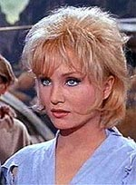
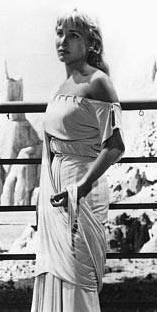
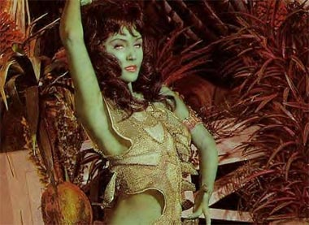
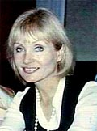
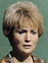

|
por Rosimeire Anne
 Mais conhecida como atriz de televiso que participou como convidada de vrias sries (centenas, para ser exata), desde as famosas "The Twilight Zone" e "Murder, She Wrote" a programas menos conhecidos, ela lembrada pelos fs de Jornada
nas Estrelas como Vina, a humana usada pelos enigmticos Talosianos para atrair o capito
Christopher Pike e induzi-lo a ajudar a repovoar o planeta Talos
IV, na tentativa de salvar do esquecimento a decadente cultura
aliengena. Os eventos foram narrados no primeiro piloto da
srie, "The Cage".
Charlotte Gurcke, mais conhecida por Susan Oliver, nasceu no dia 13 de fevereiro de 1937 em Nova York, NY. A me de Susan era uma astrloga de Hollywood, Ruth Hale Oliver, que faleceu em
1988.
 Antes de fazer sua estria no cinema com o filme "The Green Eyed Blonde", em 1957, Oliver estudou teatro na Neighborhood Playhouse School of Theater,
participando de algumas peas.
Ela juntou-se ao elenco da srie "Peyton Place" como Ann Colby Howard em 1966, enquanto continuava com seus filmes. A carreira de Susan no cinema tornou-se muito irregular depois de 1970, embora ela fosse membro ativo do workshop para mulheres no American Film Institute.
Susan dirigiu poucos filmes e alguns episdios de sries de televiso. No seu tempo livre, ela era uma talentosa piloto de avio, que, em 1966, sobreviveu a um pequeno acidente. Em compensao, Oliver ganhou a corrida de avio Powder Puff Derby em 1970 e foi nomeada Piloto do Ano. Mais tarde, ela se tornou a primeira mulher a pilotar sozinha um avio monomotor de Nova York at Moscou, mas foi demovida em Denwark quando o governo sovitico negou permisso para voar em seu espao areo.

 Em 1983, Susan publicou suas memrias no livro entitulado
"Odyssey, A Daring Transatlantic Journey". Para Oliver, o livro foi mais do que uma histria sobre sua bem-sucedida carreira de atriz e diretora, ou sobre sobre seus compromissos como piloto de uma aeronave; um livro sobre a fora de superar um corao partido e sobre como ela cresceu como pessoa. A partir de sua experincia de vida, Susan recuperou sua f e a crena num renascimento espiritual.
 O livro era o maior motivo de orgulho para Susan, e mais do que isso, era o que ela queria passar s outras pessoas.
Susan faleceu no dia 10 de maio de 1990, de cncer no pulmo,
com apenas 53 anos.
Filmografia
1985 - International Airport - Mary Van Leuven
1981 - Hardly Working - Claire Trent
1977 - Cowboysan - Susan dirigiu esse filme
1977 - Widows Nest - Isabel
1973 - Ginger in the Morning - Sugar
1969 - Change of Mind - Margaret Rowe
1969 - The Monitors - Barbara
1969 - A Man Called Gannon - Matty
1967 - The Love-Ins - Patricia Cross
1964 - Your Cheatin' Heart - Audrey Williams
1964 - The Disorderly Orderly - Susan Andrews
1964 - Looking for Love - Jan McNair
1963 - The Caretakers - Enfermeira Cathy Clark
1960 - Butterfield 8 - Norma
1959 - The Gene Krupa Story - Dorissa Dinell
1957 - The Green-Eyed Blonde - Phyllis
1954 - Father Knows Best - Anderson
Sries de TV e telefilmes
1988 - Freddy's Nightmares, no episdio "Judy Miller, Come On Down" - a empregada
1987 - Simon & Simon, no episdio "Tanner, P.I. for Hire" - Cyd Greenwald
1985 - Murder, She Wrote, no episdio "Jessica Behind Bars" - Louise
1985 - Murder, She Wrote, no episdio "Armed Response" - Enfermeira Chefe Marge Horton
1985 - Magnum, P.I., no episdio "Let Me Hear The Music" - Laurie Crane
1982 - Tomorrows Child
1981 - The Love Boat, no episdio "Gophers Bride/Workaholic/On Second Thought" - Kay Tindal
1979 - Trapper John, M.D. - Susan dirigiu essa srie
1977 - The Streets of San Francisco, no episdio "Hang Tough" - Gracie Boggs
1975/1976 - Days of Our Lives - Laura Spencer-Horton
1974 - Petrocelli, no episdio "Edge of Evil"
1974 - Barnaby Jones, no episdio "Friends Till Death" - Karen Macklin
1973 - Love Story, no episdio "The Youngest Lovers" - Virginia Madison
1973 - The Magician, no episdio "Ovation for Murder" - Susanna
1973 - The F.B.I., no episdio "Fatal Reunion"
1973 - Ghost Story, no episdio "Spare Parts" - Ellen Pritchard
1973 - Cannon, no episdio "Moving Target" - Jill Thorson
1972 - M*A*S*H - Susan dirigiu essa srie
1972 - Gunsmoke, no episdio "Eleven Dollars" - Sarah Elkins
1972 - Medical Center, no episdio "Vision of Doom"
1972 - Night Gallery, no episdio "The Tune in Dan's Cafe"
1972 - The Smith Family, no episdio "Where There's Smoke"
1972 - Sarge, no episdio "An Accident waiting to Happen"
1971 - Do You Take This Stranger - Mildred Crandall
1971 - Longstreet, no episdio "The Long Way Home" - Paula
1971 - Alias Smith and Jones, no episdio "Journey From San Juan" - Miss Blanche Graham
1971 - Love, American Style, no episdio "Love and the Anniversary Crisis"
1971 - Love, American Style, no episdio "Love and the Baker's Half Dozen"
1971 - The Name of the Game, no episdio "Seek and Destroy"
1971 - The Movie Game - como ela mesma
1970 - Company of Killers - Thelma Dwyer
1970 - Double Jeopardy - Leona Serling
1970 - Carters Army - Anna
1970 - Dinahs Place - como ela mesma
1970 - The Virginian, no episdio "Hannah" - Carole Carson e Alice Barnes
1970 - The Mike Douglas Show - como ela mesma
1969 - Mannix, no episdio "The Odds Against Donald Jordan" - Linda Jordan
1969 - The Big Valey, no episdio "Alias Nellie Handley" - Kate Wilson
1968 - The Outsider, no episdio "The Land of the Fox" - Diane Clay
1968 - The Name of the Game, no episdio "The White Birch" - Tatiana
1968 - The Invaders, no episdio "Inquisition" - Joan Seeley
1968 - The Joey Bishop Show - como ela mesma
1967 - The Invaders, no episdio "The Ivy Curtain" - Stacy
1967 - The Virginian, no episdio "A Small Taste of Justice" - Ellen Cooper
1967 - The Wild Wild West, no episdio "The Night Dr. Loveless Died" - Triste
1967 - T.H.E. Cat, no episdio "Twenty-One and Out" - Laurie Neal
1966 - Peyton Place - Anne Colby Howard
1966 - My Three Sons, no episdio "The Awkward Age" - Jerry Harper
1966 - Gomer Pyle, U.S.M.C., no episdio "A Date with Miss Camp Henderson" - Julie Myers
1966 - I Spy, no episdio "One Thousand Fine"
1966 - A Man Called Shenandoah, no episdio "Rope's End"
1966 - Jornada nas Estrelas, em "The Menagerie" - Vina
1965 - The F.B.I., no episdio "Courage of a Conviction" - Shirley Gregg
1965 - Dr. Kildare, no episdio "Duet for One Hand" - Dra. Jessie Martel
1965 - Dr. Kildare, no episdio "Perfect Is Too Hard to Be" - Dra. Jessie Martel
1965 - Man from U.N.C.L.E., no episdio "The Bow Wow Affair"
1965 - Ben Casey, no episdio "Pas De Deux"
1965 - The Rogues, no episdio "Money Is for Burning"
1965 - Seaway, no episdio "The Sparrows" - Sue Murray
1965 - The Virginian, no episdio "A Little Learning" - Martha Perry
1965 - The Man From U.N.C.L.E., no episdio "The Bow Wow Affair" - Ursula
1965 - Jornada nas Estrelas, em "The Cage" - Vina
1964 - Guns of Diablo - Maria Macklin
1964 - Destry, no episdio "One Hundred Bibles" - Rebecca Fairhaven
1964 - The Defenders, no episdio "The Hidden Fury"
1964 - The Andy Griffith Show, no episdio "Prisoner of Love" - A Prisioneira
1963 - Burke's Law, no episdio "Who Killed the Kind Doctor?" - Janet Fielding
1963 - Dr. Kildare, no episdio "The Eleventh Commandment" - Carol Logan
1963 - The Fugitive, no episdio "Never Wave Goodbye: Part 2" - Karen Christian
1963 - The Fugitive, no episdio "Never Wave Goodbye: Part 1" - Karen Christian
1963 - The Nurses, no episdio "No Score"
1963 - 77 Sunset Strip, no episdio "Your Fortune for a Penny" - Kristine Seaver
1963 - Wagon Train, no episdio "The Lily Legend Story" - Lily Legend
1963 - Rawhide, no episdio "Incident at Spider Rock" - Judy Hall
1962 - The Alfred Hitchcock Hour, no episdio "Annabel"
1962 - Route 66, no episdio "Between Hello and Goodbye"
1962 - Checkmate, no episdio "So Beats My Plastic Heart" - A Esperana
1962 - Laramie, no episdio "Shadows in the Dust" - Jean Lavelle
1962 - The Virginian, no episdio "The Storm Gate" - Anne Crowder
1961 - Adventures in Paradise, no episdio "The Reluctant Hero"
1961 - Route 66, no episdio "Welcome to Amity"
1961 - Checkmate, no episdio "The Thrill Seeker"
1961 - Zane Grey Theater, no episdio "Image of a Drawn Sword" - Hannah Smith
1961 - Naked City, no episdio "A Memory of Crying"
1961 - The Americans, no episdio "The Gun" - Rachel
1961 - Rawhide, no episdio "Incident of his Brothers Keeper" - Laurie Evans
1961 - Adventures in Paradise, no episdio "Hill of Ghosts"
1961 - The Aquanauts, no episdio "Stormy Weather" - Laura
1961 - The Untouchables, no episdio "The Organization" - Roxie Plummer e Sra. Maxie Schram
1961 - Thriller, no episdio "Choose a Victim" - Edith Landis
1961 - The Dick Powell Show, no episdio "Thunder in a Forgotten Town"
1960 - Zane Grey Theater, no episdio "Knife of Hate" - Susan Pittman
1960 - Wagon Train, no episdio "The Cathy Eckhardt Story" - Cathy Eckhardt
1960 - The Deputy, no episdio "The Deadly Breed" - Julie
1960 - Wrangler, no episdio "Incident at the Bar M"
1960 - Adventures in Paradise, no episdio "Whip-Fight"
1960 - Wagon Train, no episdio "The Maggie Hamilton Story" - Maggie Hamilton
1960 - Wanted: Dead or Alive, no episdio "The Parish"
1960 - The DuPont Show with June Allyson, no episdio "The Blue Goose"
1960 - The Lineup, no episdio "Run to the City" - Lori
1960 - Bonanza, no episdio "The Outcast" - Leta Malvet
1959 - Staccato
1959 - Trackdown, no episdio "Blind Alley"
1958 - Suspicion, no episdio "The Woman Who Turned to Salt"
1958 - Kraft Television Theatre, no episdio "The Woman at High Hollow"
1957 - Wagon Train, no episdio "The Emily Rossiter Story" - Judy Rossiter
1957 - The United States Steel Hour, no episdio "The Bottle Imp"
1956 - Studio One, no episdio "A Day Before Battle"
|